Loading ...
|
5-4-1
|
Panama | 0 | - | 1 | Croatia |
4-2-3-1
|
| HT 0-0 | ||||||
|
FIFA World CupWednesday 24 June 2026
|
||||||
- Venue
- Toronto Stadium
- Attendance
- 43,036
- Referee
- Pierre Ghislain Atcho
Yellow card61'
Y. Bárcenas
Substitution77'
J. Ramos
C. Waterman
Substitution83'
J. Fajardo
A. Londoño
- 2
Substitution90'
C. Blackman
É. Davis
Y. Bárcenas
T. Rodríguez
Whistle45+4'
45+4'
- 2
Substitution46'
P. Musa
A. Budimir
J. Gvardiol
A. Kramarić
Goal54'
A. Budimir
Assist: J. Stanišić
- 2
Substitution72'
Marco Pašalić
L. Sučić
M. Kovačić
P. Sučić
Substitution81'
L. Modrić
Mario Pašalić
Yellow card90+2'
P. Sučić
Panama | |
|---|---|
Goalkeeper | |
| 22 | O. Mosquera |
Defender | |
| 2 | C. Blackman 90' |
| 3 | J. Córdoba |
| 13 | J. Ramos 77' |
| 16 | A. Andrade |
| 23 | A. Murillo |
Midfielder | |
| 6 | C. Martínez |
| 7 | J. Rodríguez |
| 11 | Y. Bárcenas 61'90' |
| 14 | C. Harvey |
Forward | |
| 17 | J. Fajardo 83' |
Substitutes | |
| 9 | T. Rodríguez 90' |
| 15 | É. Davis 90' |
| 18 | C. Waterman 77' |
| 24 | A. Londoño 83' |
Croatia | |
Goalkeeper | |
| 1 | D. Livaković |
Defender | |
| 2 | J. Stanišić |
| 3 | M. Pongračić |
| 4 | J. Gvardiol 46' |
| 6 | J. Šutalo |
Midfielder | |
| 8 | M. Kovačić 72' |
| 10 | L. Modrić 81' |
| 14 | I. Perišić |
| 16 | M. Baturina |
| 24 | Marco Pašalić 72' |
Forward | |
| 26 | P. Musa 46' |
Substitutes | |
| 9 | A. Kramarić 46' |
| 11 | A. Budimir 46'54' |
| 15 | Mario Pašalić 81' |
| 17 | P. Sučić 72'90+2' |
| 21 | L. Sučić 72' |


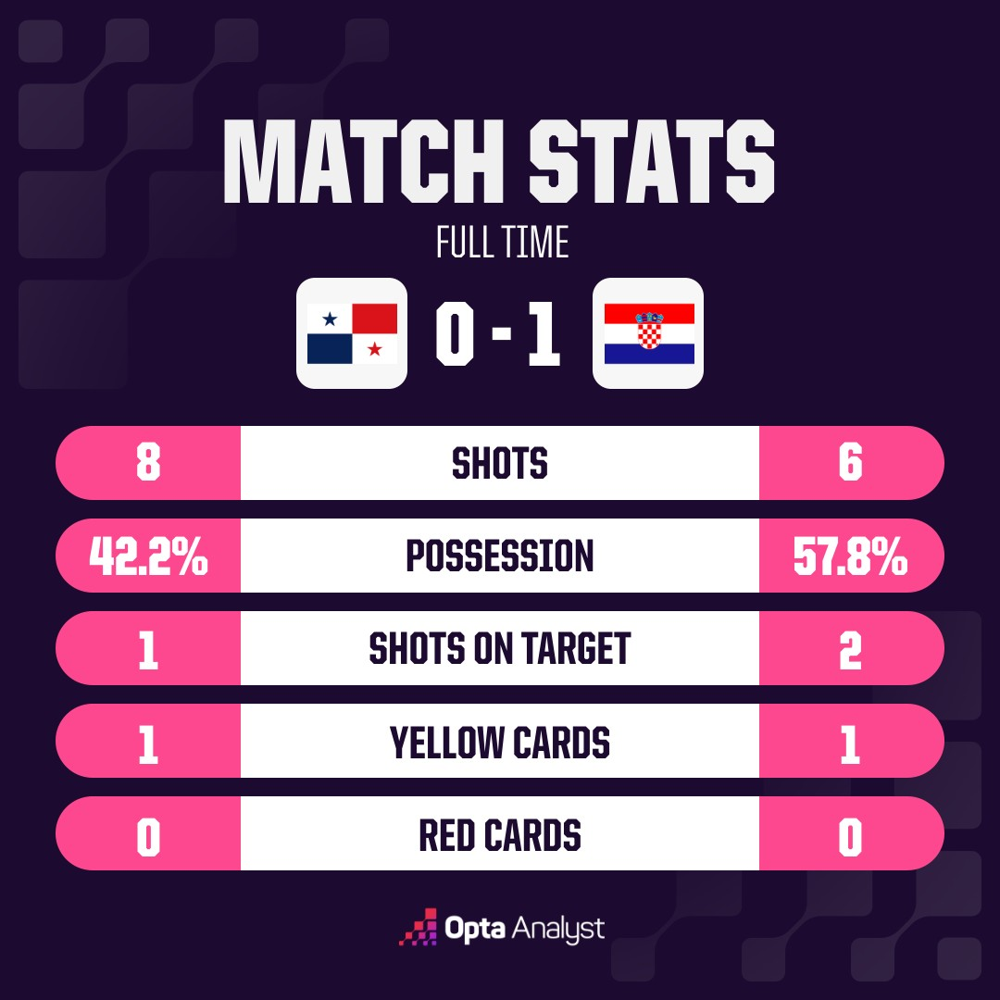
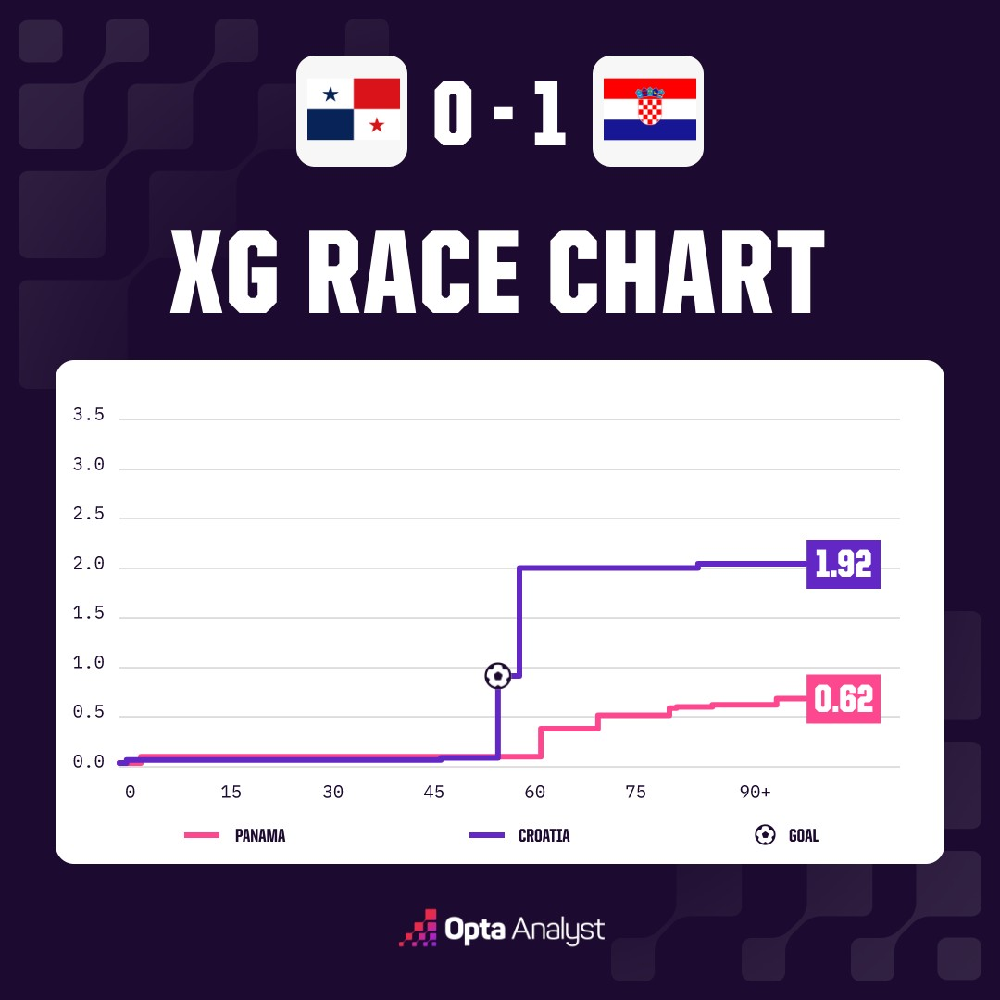
97'
Croatia attempted 6 shots in this game, their lowest total in a single match in the 2026 FIFA World Cup.
97'
Panama attempted 8 shots in this game, their lowest total in a single match in the 2026 FIFA World Cup.
97'
Panama have lost their last 5 games in the FIFA World Cup, their longest losing streak in the competition (since at least 1965/1966).
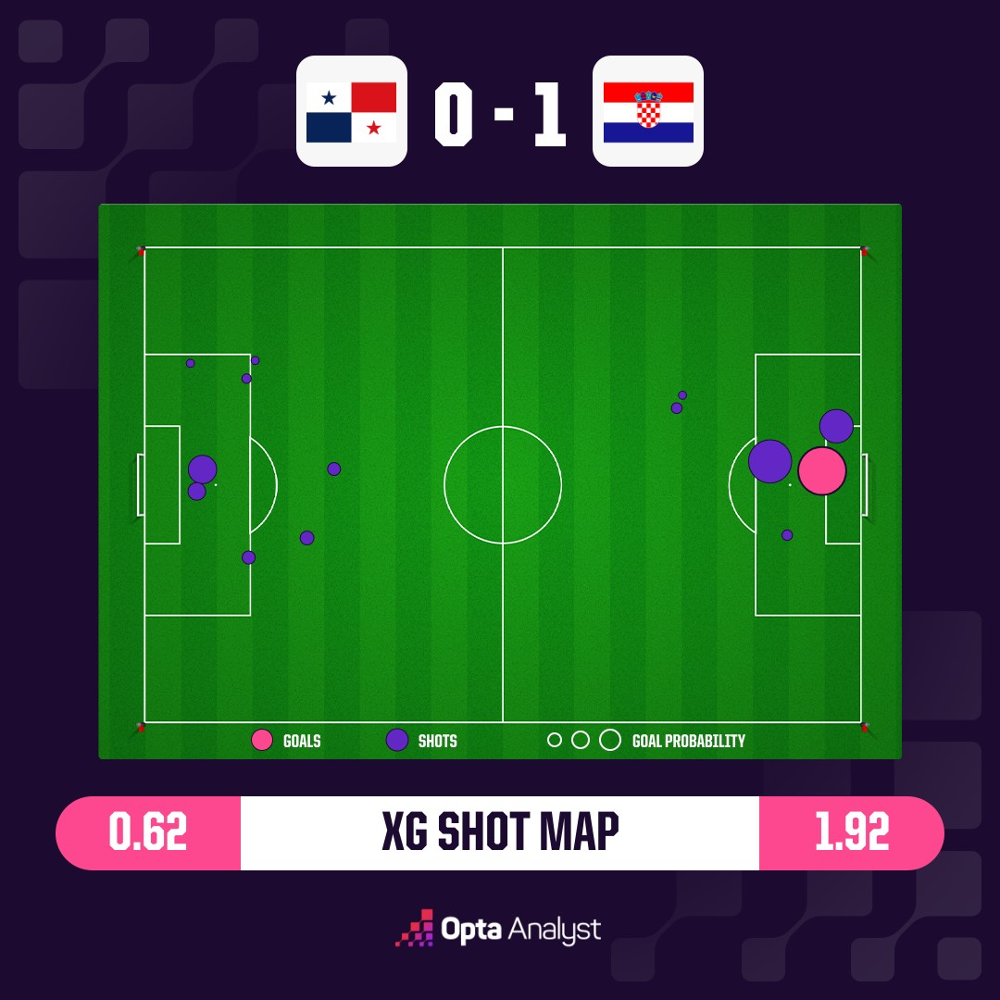
90+6'
IT’S ALL OVER! Croatia have taken the victory, winning 0-1 thanks to goal from Ante Budimir. Croatia can celebrate, but Panama will have to lick their wounds.
90+4'
Andrés Andrade goes in on Ante Budimir and concedes a foul. The free-kick is not in a particularly dangerous area from Panama’s viewpoint, though.
90+3'
No luck! Amir Murillo takes on a shot that, had they got it right, might have been set to test the goalkeeper, but instead it is sent off target and Croatia come away unscathed.
90+2'
BOOKING! Yellow card for Petar Sučić, who is penalised for a foul. The referee waves away their remonstrations, and now they will have to be careful.
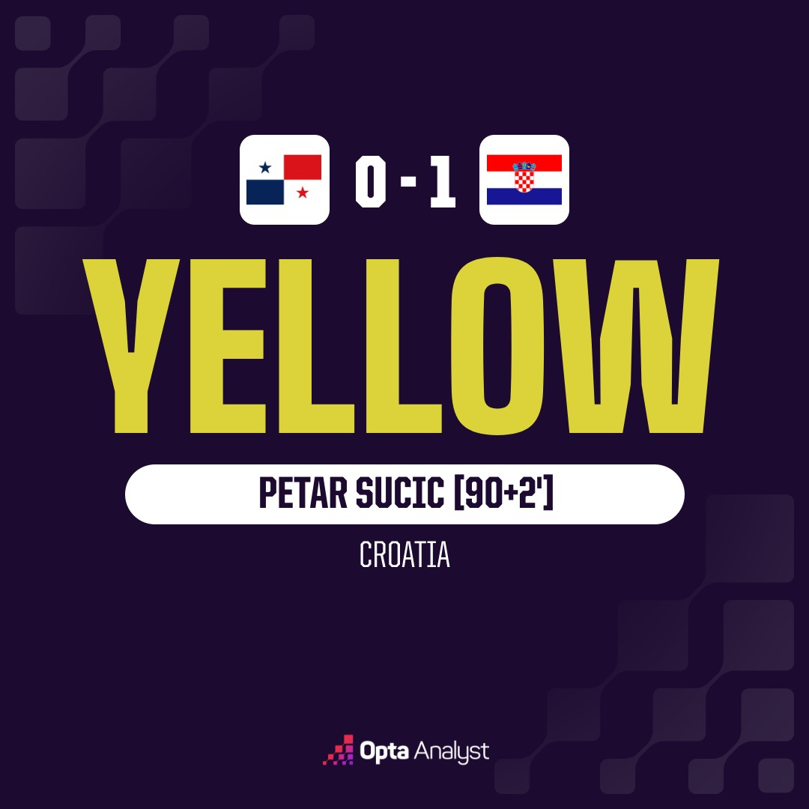
90+2'
A free-kick in a dangerous position now for Panama, after a foul from Petar Sučić on Tomás Rodríguez. Can Panama make Croatia pay for that rashness from Petar Sučić?
90+2'
Still behind, but Panama are refusing to roll over - defensive urgency rising as they fend off more pressure and push for a late turnaround.
90+1'
Ante Budimir goes in on Cristian Martínez and concedes a foul. The free-kick is not in a particularly dangerous area from Croatia’s viewpoint, though.
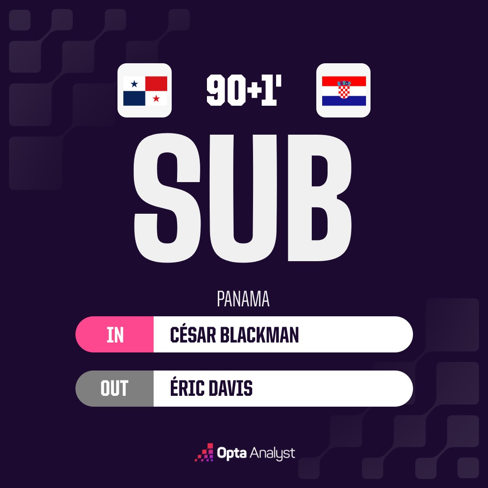
90+1'
Corner! Panama are pushing for a goal and now they have an opportunity from this set-piece.
90+1'
A barrage of deliveries from Panama, who are pushing hard to force the equaliser.
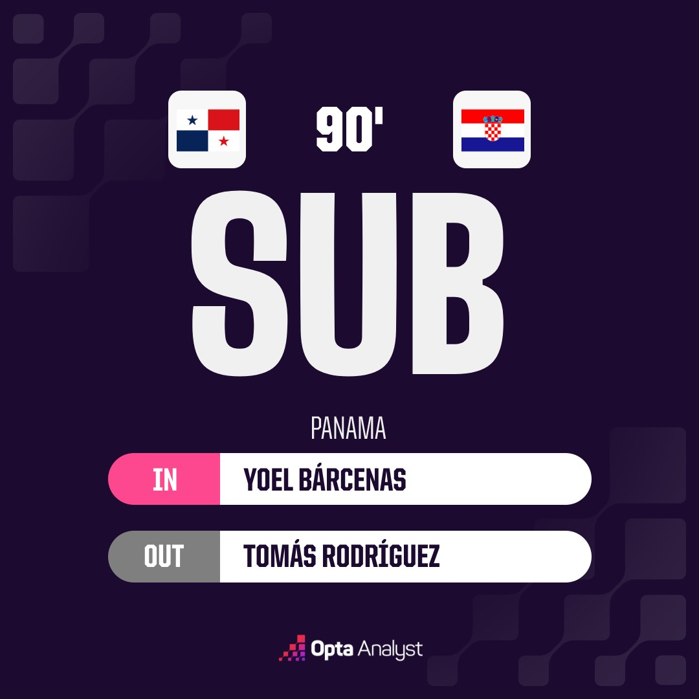
90+1'
A substitution for Panama sees Yoel Bárcenas replaced by Tomás Rodríguez. There does not appear to be any obvious sign of an injury, so that is a tactical switch.
90+1'
A substitution for Panama sees César Blackman replaced by Éric Davis. There does not appear to be any obvious sign of an injury, so that is a tactical switch.
90+1'
A rash challenge from Ante Budimir, who sends Yoel Bárcenas tumbling, giving Panama a free-kick. It is not in a threatening position, but it gives them a chance to get back on the ball.
89'
A free-kick to Croatia, as Cecilio Waterman goes in and fouls Josip Stanišić. However, Panama will not mind giving one away in this area too much, with plenty of distance to their goal.
89'
Free-kick! A foul from Mario Pašalić on César Blackman. It is well away from Croatia’s goal, so it is unlikely to result in a chance for Panama.
88'
It’s backs to the wall now — Croatia throwing everything into defending their advantage, with a flurry of crucial interventions.
84'
BLOCKED! That was close. Cecilio Waterman got off a shot, which was heading in, but Ivan Perišić was on hand to make a vital intervention. Great block!
83'
José Fajardo’s match is over as Panama decide to make a substitution. Azarías Londoño enters the field in what looks like a tactical change.
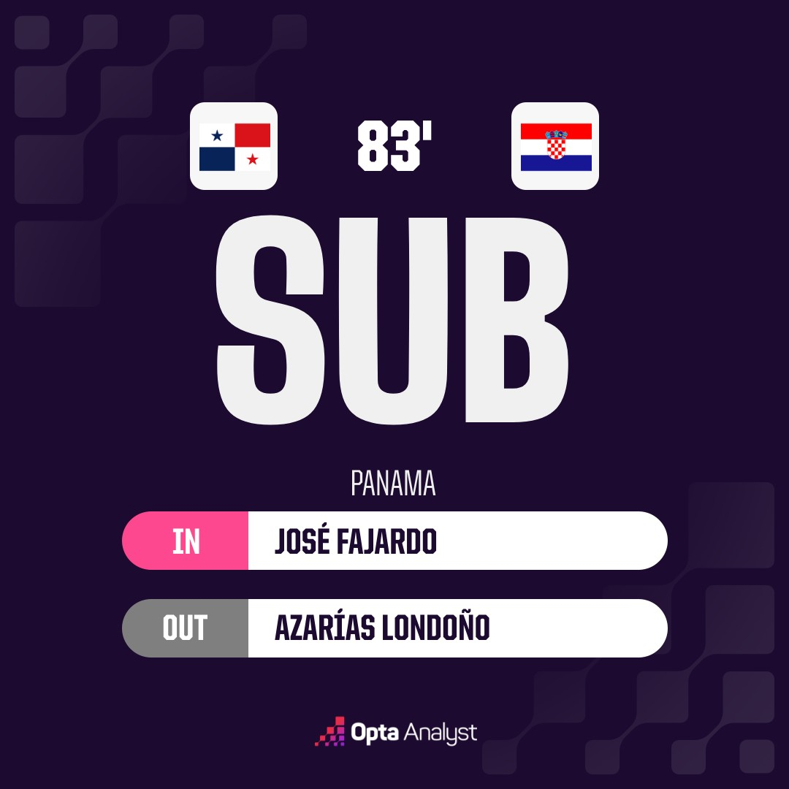
83'
Free-kick! A foul from Marin Pongračić on Cecilio Waterman. It is well away from Croatia’s goal, so it is unlikely to result in a chance for Panama.
82'
Luka Sučić's effort is deflected out for a corner. Can Croatia make anything of this set-piece?
81'
The Croatia manager is looking to the substitutes’ bench, bringing on Mario Pašalić in place of Luka Modrić. Will the change make a difference? Let’s find out!
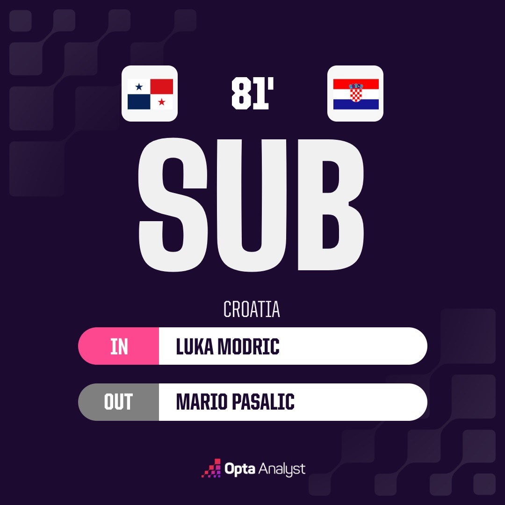
80'
This could be a chance for Croatia, after José Fajardo fouls Martin Baturina, handing them a free-kick in a threatening area. A good set-piece from here could really test the Panama defense!
79'
Panama have attempted the last 5 shots in this game, Croatia last shot was taken by Marco Pašalić in the 57th minute.
79'
MISS! A shot from Carlos Harvey ends up being off target. They might have done a bit better with that one, but it remains Panama 0-1 Croatia.
78'
No luck! José Rodríguez takes on a shot that, had they got it right, might have been set to test the goalkeeper, but instead it is sent off target and Croatia come away unscathed.
77'
Panama are making a tactical change. Jiovany Ramos is leaving the field and in their place comes Cecilio Waterman – we will soon see if this switch has the desired impact.
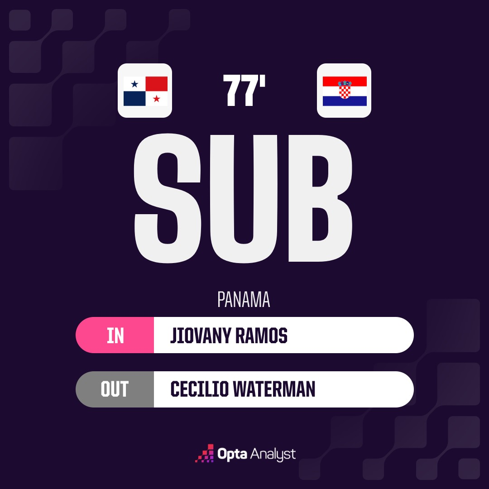
76'
There are 15 minutes plus added time to go in this match. Croatia have had more of the ball so far with a possession figure of 59.79%, while Panama have had 40.21%.
74'
Offside! Cristian Martínez thought they were through on goal, but the Croatia defence stepped up in time to catch them offside, and the assistant referee puts their flag up.
73'
A free-kick to Panama, as Petar Sučić goes in and fouls Carlos Harvey. However, Croatia will not mind giving one away in this area too much, with plenty of distance to their goal.
72'
Substitution! Petar Sučić replaces Mateo Kovačić for Croatia as the manager shuffles the pack. Can Petar Sučić make an impression as this match continues?
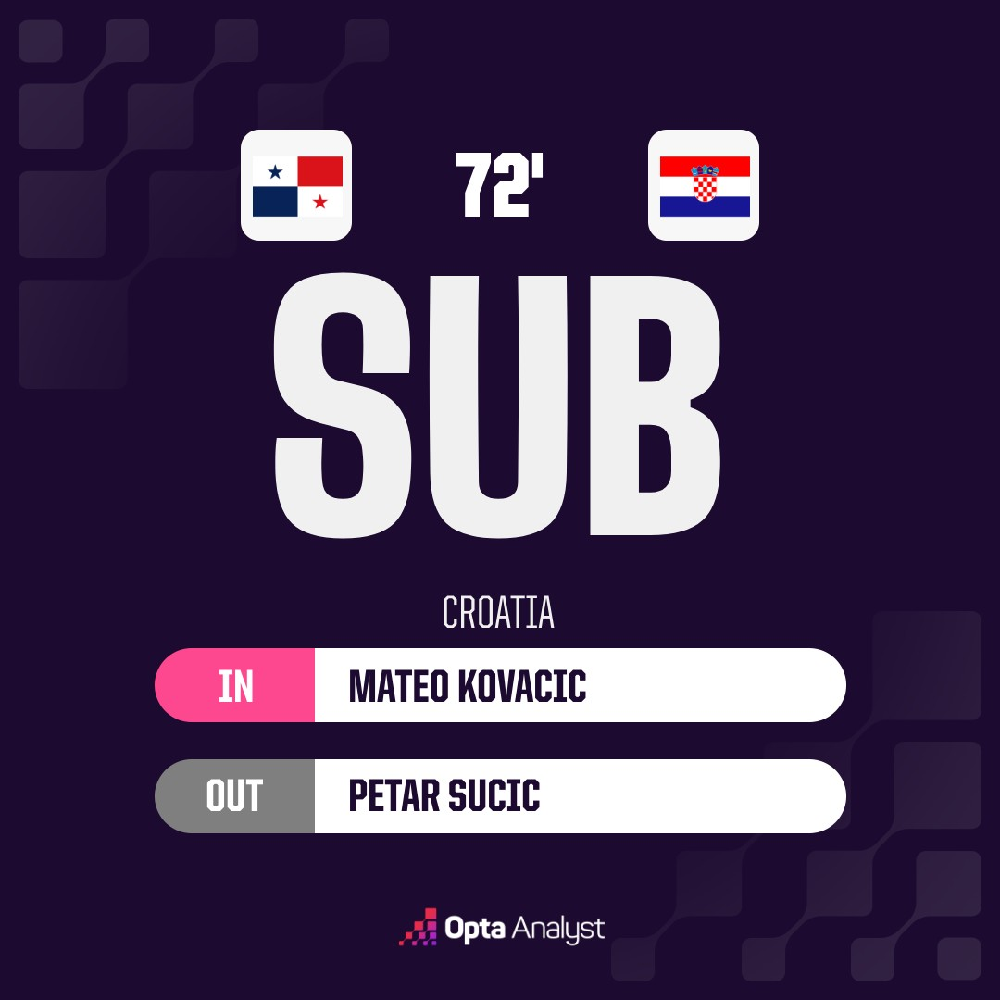
72'
Marco Pašalić’s match is over as Croatia decide to make a substitution. Luka Sučić enters the field in what looks like a tactical change.
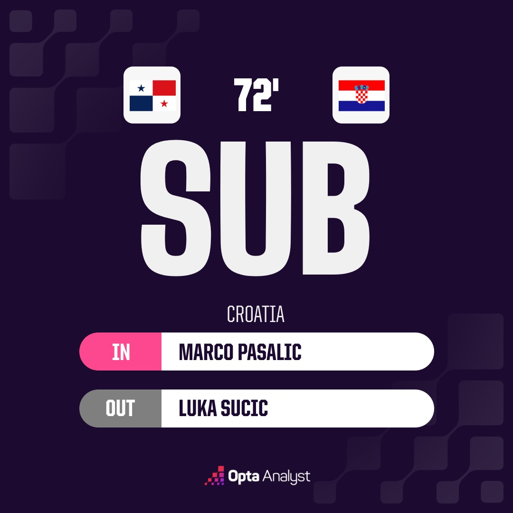
68'
A chance goes begging as Carlos Harvey gets off a shot that does not hit the target. They might have done better with that one, but instead it is a goal-kick to Croatia.
68'
Corner! Panama are pushing for a goal and now they have an opportunity from this set-piece.
68'
SAVED! Good work from Dominik Livaković, who stands firm to deny Amir Murillo, who managed to get a shot away from inside the Croatia area.
68'
It’s backs to the wall now — Croatia throwing everything into defending their advantage, with a flurry of crucial interventions.
66'
With 25 minutes left to play, it’s a good chance to check in on the shot count. Croatia have mustered 5 so far, with 2 of those landing on target. On the other hand, Panama have gotten 2 of their 0 of attempts on target.
65'
A foul from José Córdoba on Martin Baturina sees Croatia win a free-kick, but it is not in a dangerous position, so Panama should be confident they can defend it easily enough.
64'
That’s offside! A switched-on defensive line from Panama, as they step up at the right time to catch Marco Pašalić offside, and the assistant referee’s flag is up.
62'
It’s backs to the wall now — Croatia throwing everything into defending their advantage, with a flurry of crucial interventions.
61'
BOOKING! Yellow card for Yoel Bárcenas, who is penalised for a foul. The referee waves away their remonstrations, and now they will have to be careful.
61'
Free-kick! A foul from Yoel Bárcenas on Luka Modrić. It is well away from Panama’s goal, so it is unlikely to result in a chance for Croatia.
60'
A rash challenge from José Córdoba, who sends Marco Pašalić tumbling, giving Croatia a free-kick. It is not in a threatening position, but it gives them a chance to get back on the ball.
60'
MISSED! That is really poor from José Fajardo, who fails to convert from a golden opportunity, with the goal gaping. Will Panama pay for their profligacy, or can they put that miss behind them?
58'
A foul from César Blackman on Marco Pašalić sees Croatia win a free-kick, but it is not in a dangerous position, so Panama should be confident they can defend it easily enough.
57'
What a miss! That is a bad finish from Marco Pašalić, who has been unable to convert from a good opportunity, seeing a big chance for Croatia to extend their lead go begging. Will Panama make them pay for that profligacy?
57'
An opportunity for Croatia to extend their lead goes begging, as Marco Pašalić is unable to convert from a good opening. Will they live to regret that miss?
56'
Corner! Panama are pushing for a goal and now they have an opportunity from this set-piece.
56'
Excellent defensive work from Croatia; their organization and success in key duels are effectively safeguarding their lead.
56'
Free-kick! A foul from Josip Šutalo on José Fajardo. It is well away from Croatia’s goal, so it is unlikely to result in a chance for Panama.
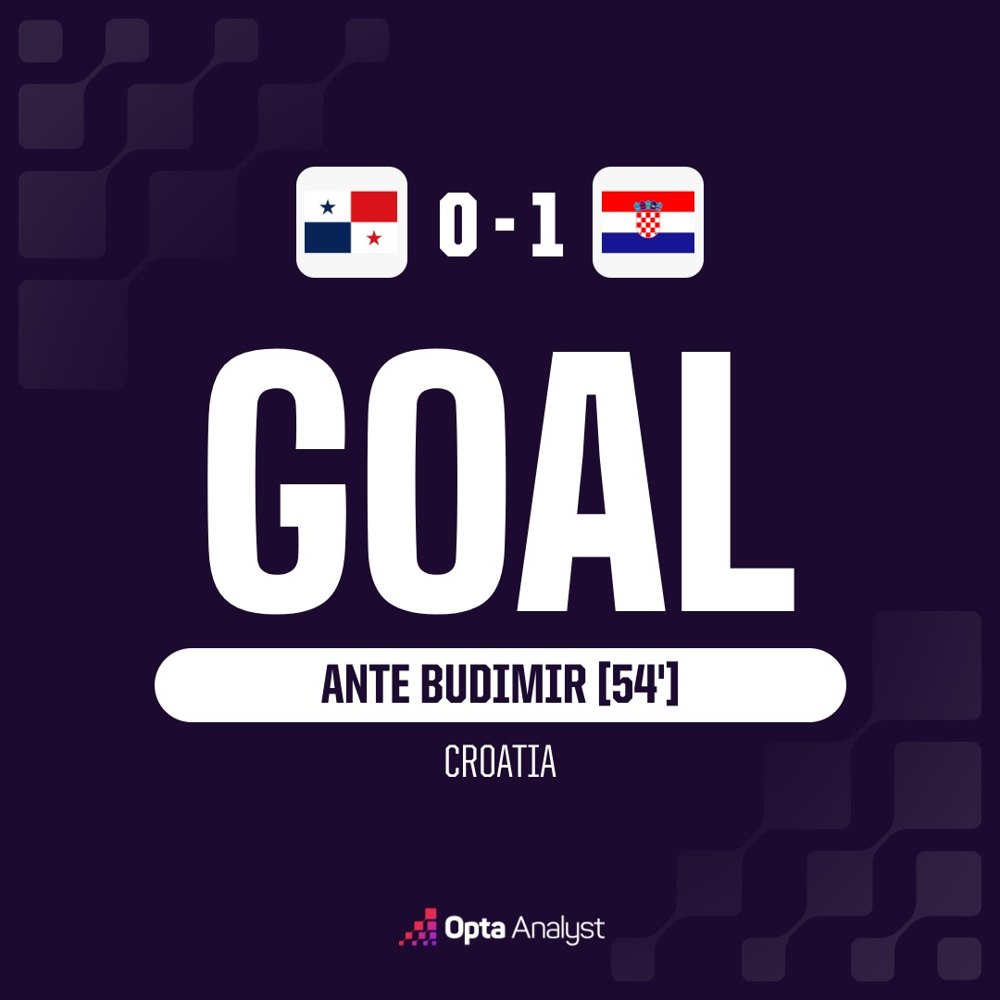
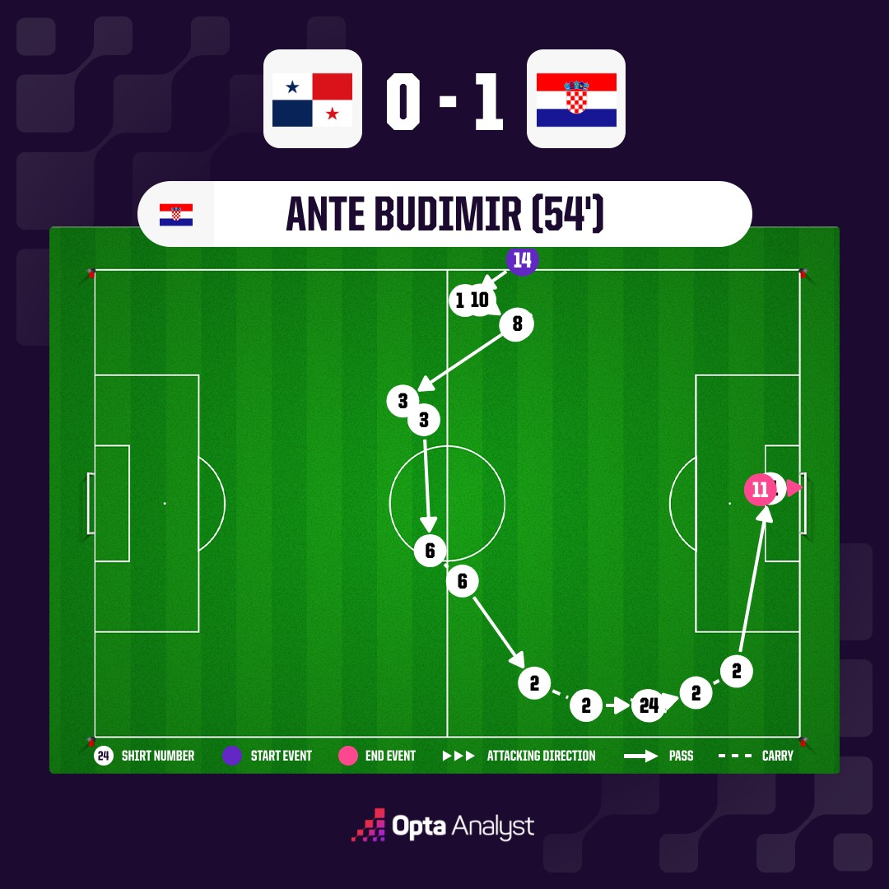
54'
Josip Stanišić has assisted his first goal in the 2026 FIFA World Cup.
54'
Croatia have avoided defeat in their last 5 matches when scoring first in the FIFA World Cup, since a 1-3 loss to Brazil on 12th June 2014.
54'
Ante Budimir has scored his first goal in the 2026 FIFA World Cup.
54'
GOAL! Croatia are in the lead! Ante Budimir scores from inside the box to give his side the advantage in this match. Can Panama find a way back into this, or will Croatia go on and win it now?
53'
A rash challenge from José Córdoba, who sends Ante Budimir tumbling, giving Croatia a free-kick. It is not in a threatening position, but it gives them a chance to get back on the ball.
52'
Corner! The ball goes behind and now Panama will aim to deliver a good ball into the penalty area and test that Croatia defence, which has been frustrating them in recent minutes.
50'
Offside! Andrej Kramarić thought they were through on goal, but the Panama defence stepped up in time to catch them offside, and the assistant referee puts their flag up.
49'
A rash challenge from José Rodríguez, who sends Josip Stanišić tumbling, giving Croatia a free-kick. It is not in a threatening position, but it gives them a chance to get back on the ball.
49'
There is plenty of possession for Croatia, with 65.00% compared to Panama 35.00% in the last 15 minutes. However, Croatia have not been able to turn that dominance of the ball into a goal.
47'
A rash challenge from José Fajardo, who sends Luka Modrić tumbling, giving Croatia a free-kick. It is not in a threatening position, but it gives them a chance to get back on the ball.
46'
Andrej Kramarić is making his 16th appearance in the FIFA World Cup.
46'
Croatia are making a tactical change. Petar Musa is leaving the field and in their place comes Ante Budimir – we will soon see if this switch has the desired impact.
46'
The Croatia manager is looking to the substitutes’ bench, bringing on Andrej Kramarić in place of Josko Gvardiol. Will the change make a difference? Let’s find out!
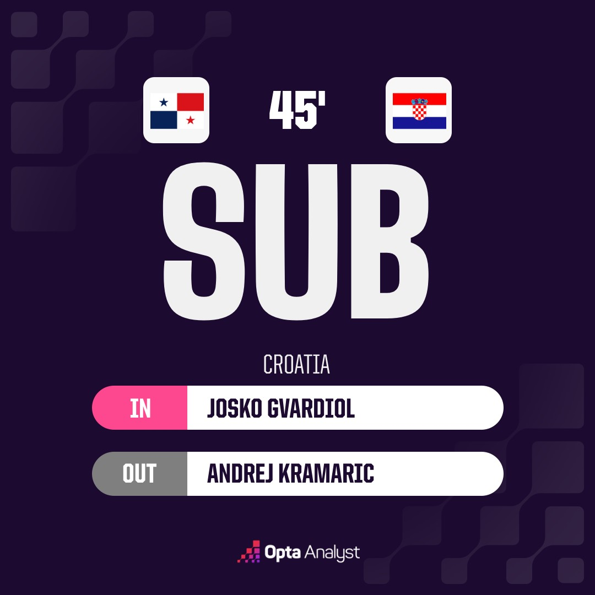
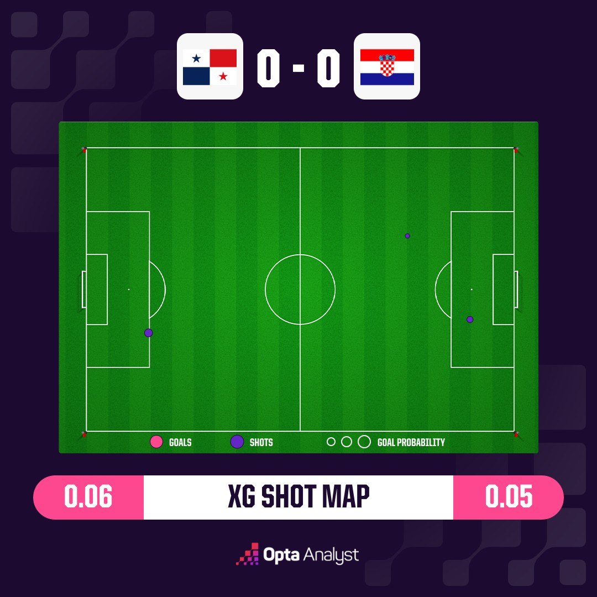
45+4'
Half-time! The referee blows the whistle and it is time for the interval. As we reach the break it is Panama 0-0 Croatia at Toronto Stadium.
45+1'
That is a disappointing effort from Martin Baturina, who went for glory but got their attempt wrong, and the shot sailed off target. A frustrating moment for Croatia.
45+1'
A foul from Cristian Martínez on Martin Baturina sees Croatia win a free-kick, but it is not in a dangerous position, so Panama should be confident they can defend it easily enough.
44'
Free-kick! A foul from Josip Šutalo on José Fajardo. It is well away from Croatia’s goal, so it is unlikely to result in a chance for Panama.
42'
Croatia are having plenty of the ball, with 66.67% possession in the last 15 minutes. However, they have been unable to transfer that possessional dominance into a goal during that spell, and are not even generating shooting opportunities, so Panama may not be unduly alarmed.
41'
Panama have not had a shot on target so far in this game.
40'
A rash challenge from Amir Murillo, who sends Josko Gvardiol tumbling, giving Croatia a free-kick. It is not in a threatening position, but it gives them a chance to get back on the ball.
38'
A foul from José Rodríguez on Josip Stanišić sees Croatia win a free-kick, but it is not in a dangerous position, so Panama should be confident they can defend it easily enough.
37'
Neither team has had a shot in the past 10 minutes, as this match just enters something of a down period. Croatia have seen more of the ball, with 85 per cent possession, but Panama are keeping them away from goal. There is still a chance the match will spark into life, though.
36'
Can Croatia make this chance count? They have won a free-kick in a threatening position after a foul from José Córdoba on Martin Baturina. Will Panama's defence be tested here?
34'
It has been 30 minutes since Panama last attempted a shot in this game.
32'
It has been 30 minutes since Croatia last attempted a shot in this game.
29'
Good play from Martin Baturina, who draws a foul from Yoel Bárcenas to hand Croatia a free-kick in a dangerous position. Will they create something from this set-piece?
28'
A free-kick to Croatia, as Cristian Martínez goes in and fouls Josko Gvardiol. However, Panama will not mind giving one away in this area too much, with plenty of distance to their goal.
27'
In the last 15 minutes, it is Croatia who have dominated the ball, having seen 67.63% of the possession, yet they have not been able to go and turn that into a single shot, so there is no imminent sign of a goal.
26'
Neither team has had a shot in the past 10 minutes, as this match just enters something of a down period. Croatia have seen more of the ball, with 59 per cent possession, but Panama are keeping them away from goal. There is still a chance the match will spark into life, though.
22'
Josko Gvardiol goes in on Cristian Martínez and concedes a foul. The free-kick is not in a particularly dangerous area from Croatia’s viewpoint, though.
16'
This game is certainly in a bit of a lull now, with neither team having had an attempt at goal in the past 10 minutes. It could do with something to spark it into life. Croatia have had more possession during the quiet spell, but are yet to do much with it.
13'
Free-kick! A foul from Luka Modrić on José Rodríguez. It is well away from Croatia’s goal, so it is unlikely to result in a chance for Panama.
8'
A free-kick in a dangerous position now for Panama, after a foul from Mateo Kovačić on Carlos Harvey. Can Panama make Croatia pay for that rashness from Mateo Kovačić?
6'
A foul from Carlos Harvey on Martin Baturina sees Croatia win a free-kick, but it is not in a dangerous position, so Panama should be confident they can defend it easily enough.
6'
It’s been tight so far, and Croatia are making sure it stays that way with strong defensive discipline and well-timed clearances.
5'
Jiovany Ramos goes in on Martin Baturina and concedes a foul. The free-kick is not in a particularly dangerous area from Panama’s viewpoint, though.
4'
BLOCK! An intervention from Josip Šutalo might have just prevented a goal, with the defending player getting in the way of an attempt from Amir Murillo. Solid defending there!
3'
Josko Gvardiol goes in on Cristian Martínez and concedes a foul. The free-kick is not in a particularly dangerous area from Croatia’s viewpoint, though.
2'
A chance goes begging as Luka Modrić gets off a shot that does not hit the target. They might have done better with that one, but instead it is a goal-kick to Panama.
2'
Confident start by Croatia, knocking it around with purpose and keeping control in the opening phase.
1'
KICK-OFF! And here we go! We are up and running in this clash between Croatia and Panama at Toronto Stadium. Stay tuned for all the action as it happens!
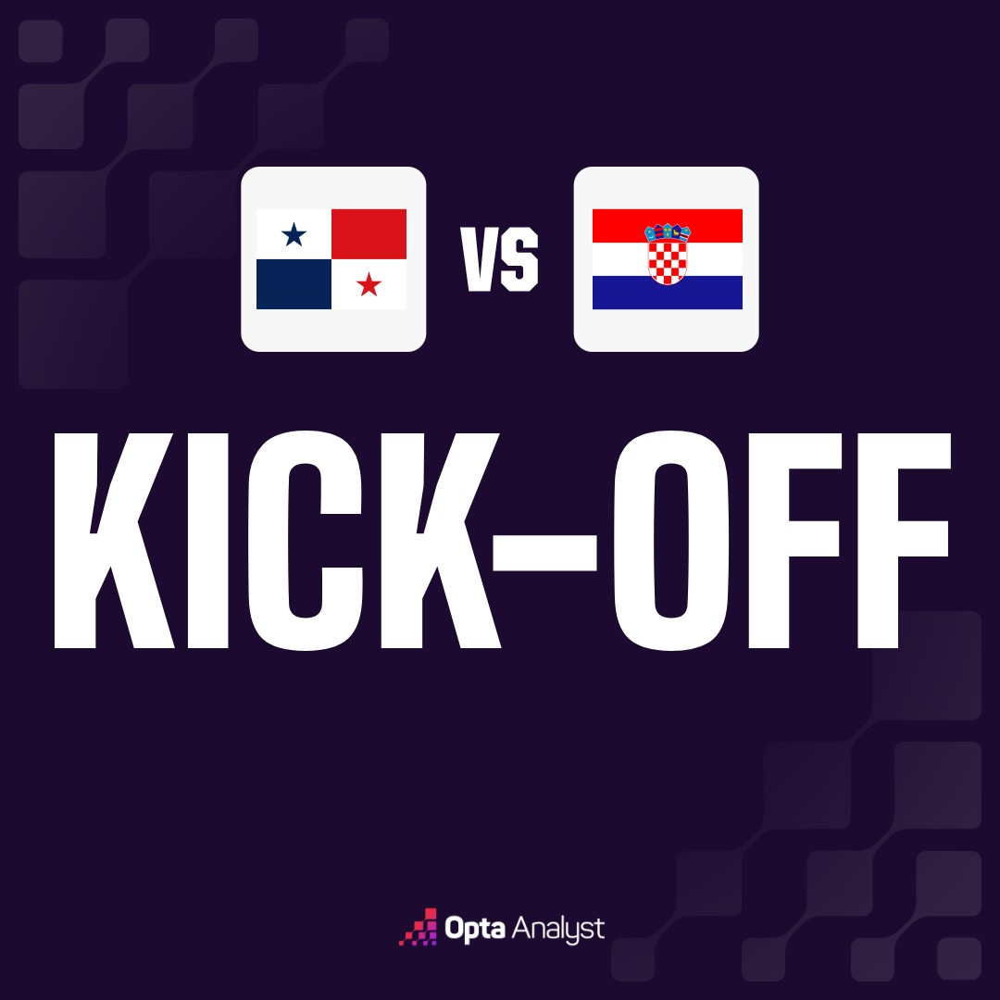
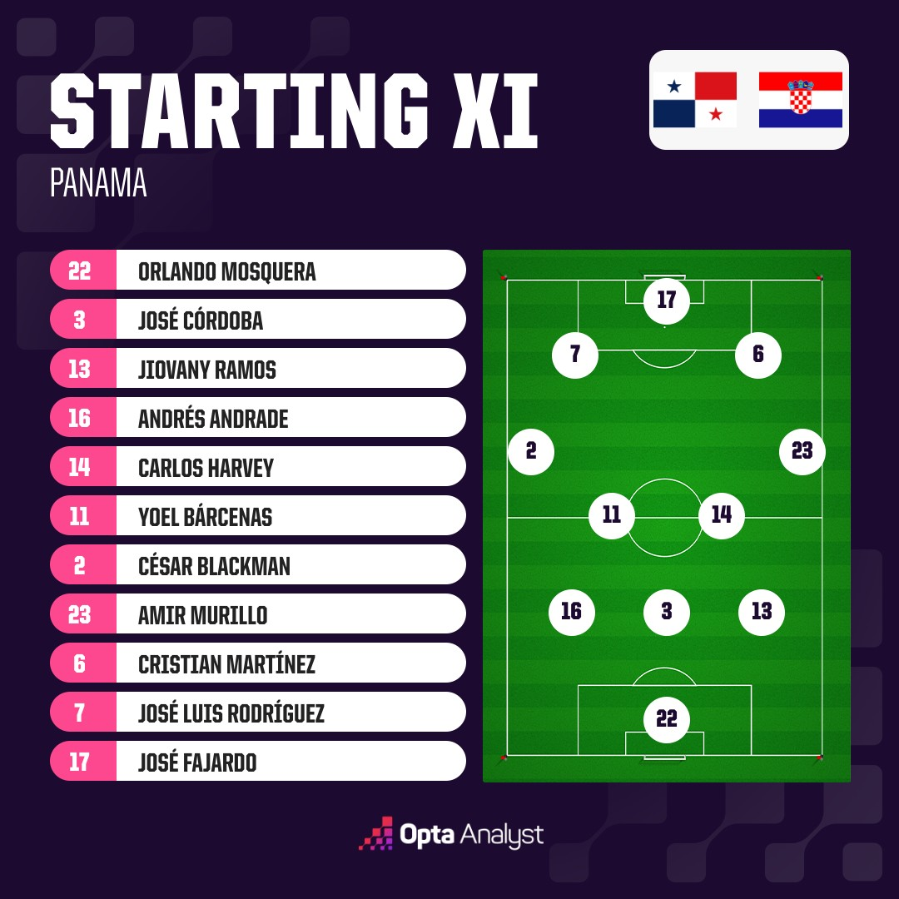
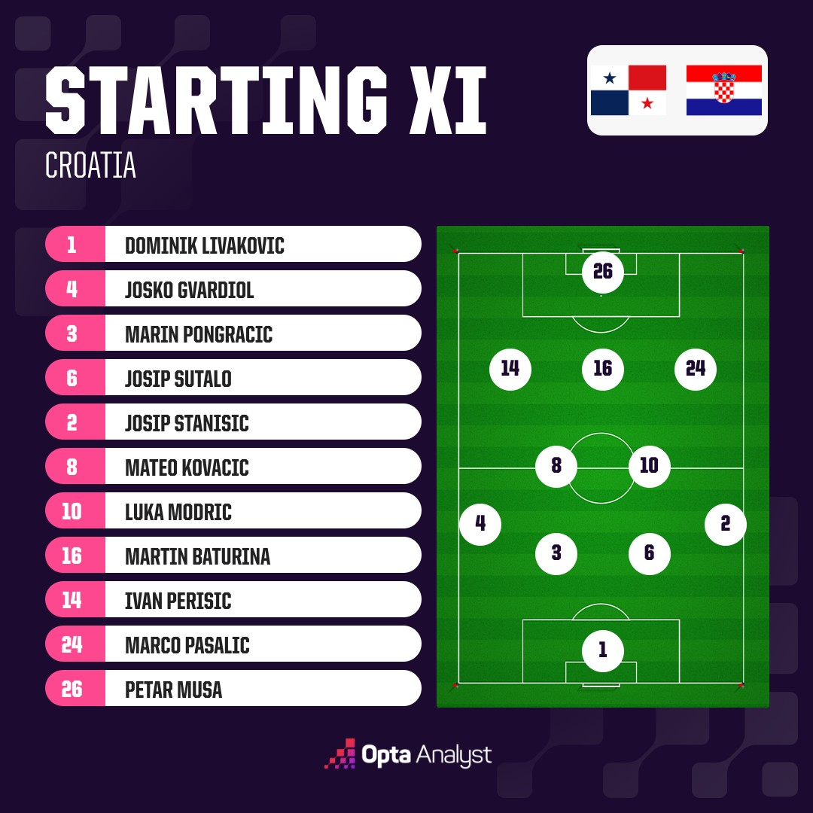
Luka Modrić is making his 21st appearance in the FIFA World Cup.
Ivan Perišić is making his 19th appearance in the FIFA World Cup.
Mateo Kovačić is making his 17th appearance in the FIFA World Cup.
There have been 3 or more goals scored in each of Croatia's last 4 games
Two teams looking for their first win in the FIFA World Cup group stage will clash at Toronto Stadium on Tuesday, as Panama take on Croatia.
Panama suffered a 1-0 defeat in their opening World Cup group stage match against Ghana on June 17. In eight games this year, they have two wins, three draws, and three losses.
Croatia's opening World Cup group stage game saw them beaten 4-2 by England on June 17 at Dallas Stadium. Martin Baturina and Petar Musa scored in the loss. In 2026, they have won two and lost three.
Panama and Croatia are third and fourth in the group, respectively, level on zero points. With three points, England are leading the group. Ghana are second, also on three points.
Panama have yet to score in the World Cup this season. With goals against England, Baturina and Musa are the early leading World Cup scorers for Croatia.
In their last six matches in all competitions, Panama have won two, drawn two and lost two. The Panamanian side scored 10 and conceded 12 over that period, scoring first in three of the six contests. They had five first-half goals, while their opponents netted three times in the first 45 minutes. The Croatian side have won three and lost three in their last six. The Croatian side scored 10 and conceded 13 over that period, netting first in one of the six. They had five goals in the first half, while their opponents netted seven times before the break.
-
General
Possession 42.0% 42.03757.96358.0% Possession lost in defensive half 29 293333 Possession lost in middle third 55 555555 Duels 122 122122122 Duels success rate 47.5% 47.54151.63951.6% Aerial duels 41 414141 Aerial duels won 63.4% 63.41536.58536.6% Successful dribbles 11 111111 Fouls won 12 121919 Offsides 1 122 Corner awarded 7 722 -
Distribution
Passes 352 352512512 Long passes 54 545151 Long passes proportion (%) 15.3% 15.3419.96110.0% Passing accuracy 78.7% 78.69384.37584.4% Passes in opponents' half 199 199268268 Passing accuracy in opponents' half (%) 70.9% 70.85478.35878.4% Total passes in the final third 108 108109109 Passing accuracy in final third (%) 62.0% 62.03771.5671.6% Forward passes 223 223313313 Forward passes (%) 63.4% 63.35261.13361.1% Through balls 0 044 Final third entries 55 555959 Penalty area entries 30 302828 Total open play crosses 25 251515 Crosses 31 311818 Crossing accuracy 19.4% 19.35527.77827.8% -
Attack
Goals 0 011 Shots 8 866 Shots on target 1 122 Blocked shots 2 211 Headed shots 2 211 Shots outside the box 2 222 Shots inside the box 6 644 Shots accuracy excluding blocked shots 16.7% 16.6674040.0% Shooting accuracy 12.5% 12.533.33333.3% Key Passes 5 544 -
Defence
Tackles 10 101919 Tackles success rate 50.0% 5036.84236.8% Clearances 29 293838 Interceptions 5 555 Recoveries 49 494848 Attacking third recovery 3 333 Defensive third recovery 25 252828 Midfield third recovery 21 211717 Recoveries in attacking half (%) 6.1% 6.1226.256.3% -
Discipline
Fouls conceded 19 191212 Yellow cards 1 111 Red cards 0 000